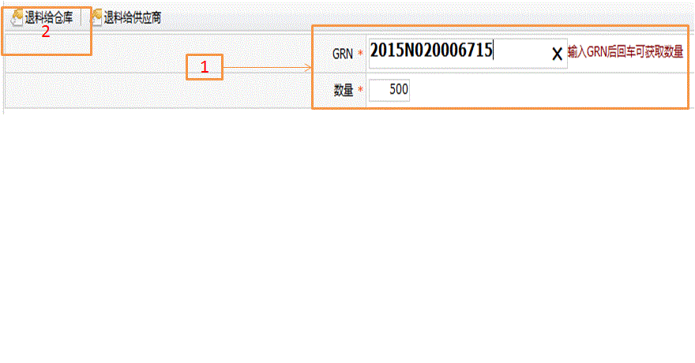
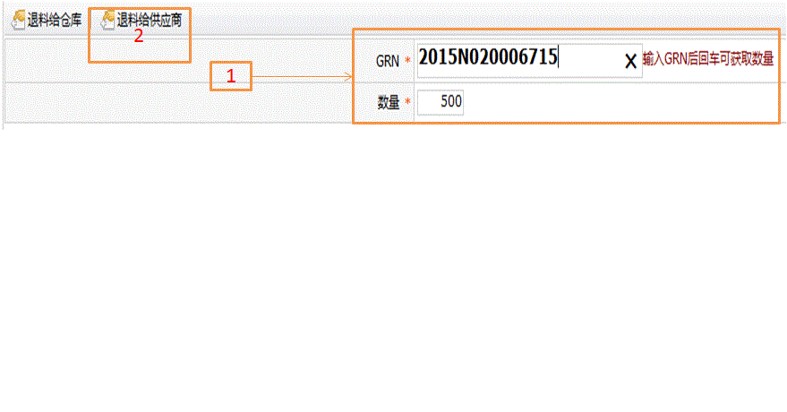

仓库退料
字段描述
字段名
描述
GRN
要退料的GRN条码
数量
要退料的GRN数量
功能描述
执行退料操作
退料给仓库
1.选择工单，输入要退料的GRN，然后输入要退料的数量；
2.单击左上角退料给仓库按钮，单击ok确定，单击cancel取消操作。

退料给供应商
1.选择工单，输入要退料的GRN，然后输入要退料的数量；
2.单击左上角退料给供应商按钮，单击ok确定，单击cancel取消操作。
